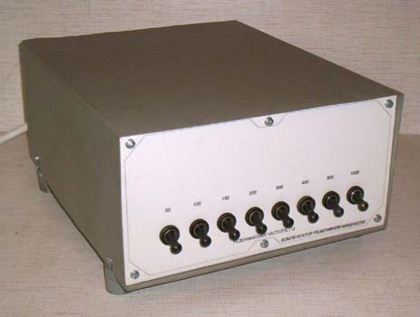
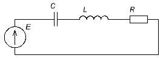
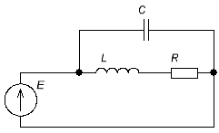
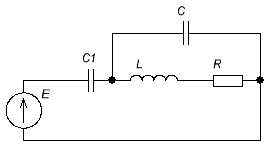
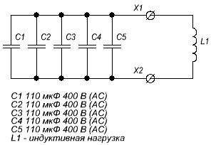
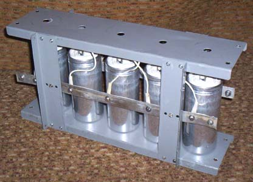
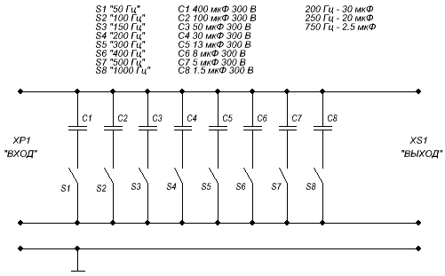
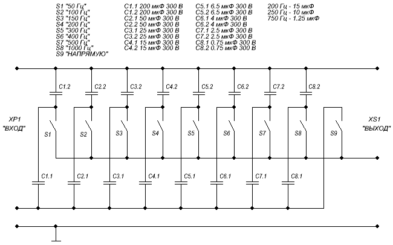
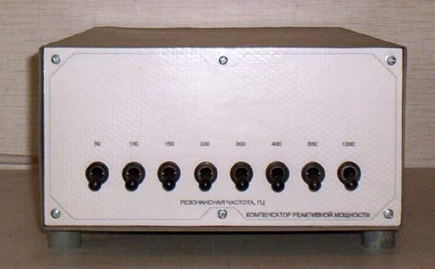
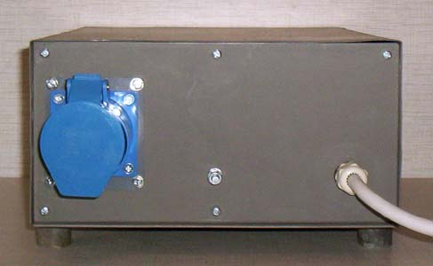

Устройства компенсации реактивной мощности электромагнитов переменного тока

1. Введение
При генерации переменных магнитных полей с помощью катушек [3] или электромагнитов [2, 5, 6] возникает проблема, связанная с тем, что индуктивное сопротивление ZL обмотки источника магнитного поля растет прямо пропорционально частоте:
где L - индуктивность обмотки, f - частота тока в обмотке. Соответственно, растет и общее сопротивление Z цепи:
где R - активное сопротивление обмотки. В соответствии с законом Ома ток I через обмотку при заданном напряжении U источника питания:
Поскольку напряженность магнитного поля (и индукция) определяется числом ампер-витков обмотки (особенно в катушках без сердечников), то для ее повышения требуется повышать ток в обмотке. При этом требование к выходному напряжению источника питания может оказаться чрезмерным, особенно на достаточно высоких частотах (сотни - тысячи герц), хотя, несмотря на высокое напряжение питания потребляемая активная мощность оказывается сравнительно небольшой, т. е. преобладает реактивная мощность. Известным способом решения вышеизложенной проблемы является использование емкостной цепи (конденсаторов), компенсирующей тем или иным образом индуктивное сопротивление и снижающей реактивную мощность по сравнению с активной. Емкостная цепь, представляющая из себя в данном случае устройство компенсации реактивной мощности, может подключаться к обмотке различными способами, некоторые из которых изложены ниже.
2. Способы подключения емкостных компенсирующих цепей к индуктивной нагрузке
2.1. Последовательное подключение конденсатора к катушке
Электрическая принципиальная схема последовательного включения конденсатора и катушки показана на рис. 2.1.1. Катушка с индуктивностью L, имеющая активное сопротивление R, подключается через конденсатор емкостью C к источнику переменного напряжения E = E0 ei w t., где E0 – его амплитуда, w – круговая (циклическая) частота, t - время.

Рис. 2.1.1. Схема последовательного включения конденсатора с катушкой индуктивности.
Активное сопротивление ZR резистора R:
Индуктивное сопротивление ZL катушки индуктивности L:
где f – частота выходного напряжения источника питания, w – круговая (циклическая) частота (w = 2pf). Емкостное сопротивление конденсатора C:
При последовательном соединении индуктивности (катушка) и емкости (компенсатор реактивной мощности) ток через нагрузку I при питании от источника напряжением E определяется формулой:
Тогда:
Напряжение на катушке индуктивности UL:
Амплитуда тока I0 определяется формулой:
Максимальное значение амплитуды тока I0 через последовательную цепь достигается при:
При этом емкость конденсатора составляет:
Соответственно:
Амплитуда напряжения на катушке индуктивности UL0 составит:
Примерно такое же напряжение, но противоположное по фазе, будет и на конденсаторе.
Например, если индуктивность катушки составляет 1 Гн, а активное сопротивление 10 Ом, то для настройки на резонансную частоту 100 Гц потребуется конденсатор емкостью
Чтобы получить ток амплитудой 1 А через катушку, требуется источник напряжения с амплитудой E0 = 1 ∙ 10 = 10 В (то же самое справедливо для действующих значений тока и напряжения). Тогда, на частоте 100 Гц при питании от источника с амплитудным напряжением 10 В (E0 = 10 В) напряжение на катушке (и на конденсаторе) составит:
Иногда такие напряжения могут оказаться неприемлемыми по конструктивным соображениям.
Таким образом, последовательный контур позволяет получить достаточно большой ток в индуктивной нагрузке при ограниченном напряжении источника за счет существенного повышения напряжений на нагрузке и компенсирующем конденсаторе на резонансной частоте.
2.2. Параллельное подключение конденсатора к катушке
Электрическая принципиальная схема параллельного включения конденсатора и катушки показана на рис. 2.2.1. Параллельно катушке с индуктивностью L, имеющей активное сопротивление R, подключается конденсатор емкостью C. Получившаяся параллельная LC-цепь подключается к источнику переменного напряжения E = E0 ei w t.

Рис. 2.2.1. Схема параллельного включения конденсатора и катушки индуктивности.
Ток I через катушку:
Таким образом, ток через катушку определяется напряжением источника питания и в основном реактивным сопротивлением катушки wL, так как
Тогда:
а амплитуда тока I0:
Конденсатор при этом не влияет на величину тока в ветви LR. Требуемое амплитудное напряжение источника питания E0 для генерации тока с амплитудой I0 в катушке при выполнении условия wL >> R:
Ток I1 от источника питания можно найти по формуле:
где ZLRC – сопротивление ветви LRC:
Тогда:
При выполнении условия:
при этом емкость конденсатора составляет:
получаем:
Так как
то
Без конденсатора ток через катушку (и от источника питания):
(с учетом того, что wL >> R).
При подключении настроенного в резонанс конденсатора ток через катушку остается тот же, но ток, потребляемый от источника питания уменьшается в wL/R раз.
Например, если индуктивность катушки составляет 1 Гн, а активное сопротивление 10 Ом, то для настройки на резонансную частоту 100 Гц потребуется конденсатор емкостью
Чтобы на такой частоте получить ток амплитудой 1 А через катушку, требуется источник напряжения с амплитудой E0 = 2 ∙ p ∙ 100 ∙ 1 ∙ 1 ≈ 628 В. При этом амплитуда тока, потребляемого от самого источника I10, составит:
При этом сдвиг фаз между током и напряжением источника будет близок к нулю. Если компенсирующий конденсатор не ставить, то источник напряжения с амплитудой 628 В будет нагружаться током с амплитудой 1 А при сдвиге фаз между током и напряжением, близким к 900.
Таким образом, для получения требуемого тока через катушку требуется источник достаточно высокого напряжения, но применение параллельного контура позволяет существенно сократить ток, потребляемый от источника на резонансной частоте и минимизировать фазовый сдвиг между током и напряжением источника.
2.3. Комбинированное подключение двух конденсаторов к катушке
Электрическая принципиальная схема комбинированного включения двух конденсаторов и катушки показана на рис. 2.3.1. Параллельно катушке с индуктивностью L и активным сопротивлением R подключается конденсатор емкостью C. Получившаяся параллельная LC-цепь через конденсатор емкостью C1 подключается к источнику переменного напряжения E = E0 ei w t. Обычно C1 = C.

Рис. 2.3.1. Схема комбинированного включения конденсаторов и катушки индуктивности.
Ток I1 от источника питания определяется формулой:
где ZLRC – сопротивление ветви LRC:
Напряжение на катушке UL (на ветви LR) совпадает с напряжением на конденсаторе C и равно:
Ток I через катушку (цепь LR):
Если C1 = aC (обычно a = 1), то:
При выполнении условия:
т. е.
ток через катушку достигает максимума:
При этом
Если a = 1, то:
Ток I1 от источника питания определяется формулой:
Так как
то
Так как
имеем
Если a = 1, то:
Так как
Таким образом, ток I1, потребляемый от источника при C1 = C, в два раза меньше тока в катушке I.
Напряжение на катушке UL (ветвь LR) совпадает с напряжением на конденсаторе C и равно:
Тогда
При выполнении условия:
С учетом wL >> R
Таким образом, амплитуда напряжения на катушке и конденсаторе C в wL/(R(1 + a-1)) раз превышает амплитудное значение источника напряжения E0. Напряжение UC1 на последовательном конденсаторе C1:
С учетом:
получаем
При выполнении условия:
При wL >> R и a ~ 1 wLa >> R. Тогда
Таким образом, амплитуда напряжения на конденсаторе C1 также в wL/(R(1 + a-1)) раз превышает амплитудное значение источника напряжения E0.
Итак, при настройке в резонанс:
Ток через катушку:
Амплитудное значение тока через катушку I0:
Ток от источника:
Амплитудное значение I10:
Напряжение на катушке (и конденсаторе C):
Амплитудное значение UL0:
Напряжение на конденсаторе C1:
Амплитудное значение UC10:
Например, если индуктивность катушки составляет 1 Гн, а активное сопротивление 10 Ом, то при a = 1 для настройки на резонансную частоту 100 Гц потребуются одинаковые конденсаторы емкостью
Чтобы получить ток амплитудой 1 А через катушку, требуется источник напряжения с амплитудой E0 = (1 + 1) ∙ 1 ∙ 10 = 20 В (то же самое справедливо для действующих значений тока и напряжения). Тогда, на частоте 100 Гц при питании от источника с амплитудным напряжением 20 В (E0 = 20 В) напряжение на катушке (и на конденсаторе C) составит:
Напряжение на конденсаторе C1:
Ток, потребляемый от источника (амплитудное значение):
Если a = 0.5, то
Чтобы получить ток амплитудой 1 А через катушку, требуется источник напряжения с амплитудой E0 = (1 + 0.5-1) ∙ 1 ∙ 10 = 30 В (то же самое справедливо для действующих значений тока и напряжения). Тогда, на частоте 100 Гц при питании от источника с амплитудным напряжением 30 В (E0 = 30 В) амплитуда напряжения на катушке (и на конденсаторе C) составит:
Амплитудное напряжение на конденсаторе C1 при этом будет равно:
Ток, потребляемый от источника (амплитудное значение):
Если a = 2, то
Чтобы получить ток амплитудой 1 А через катушку, требуется источник напряжения с амплитудой E0 = (1 + 2-1) ∙ 1 ∙ 10 = 15 В. Тогда, на частоте 100 Гц при питании от источника с амплитудным напряжением 15 В (E0 = 15 В) амплитуда напряжения на катушке (и на конденсаторе C) составит:
Амплитудное напряжение на конденсаторе C1 при этом будет равно:
Ток, потребляемый от источника (амплитудное значение):
Если a = 0.1, то
Чтобы получить ток амплитудой 1 А через катушку, требуется источник напряжения с амплитудой E0 = (1 + 0.1-1) ∙ 1 ∙ 10 = 110 В. Тогда, на частоте 100 Гц при питании от источника с амплитудным напряжением 110 В (E0 = 110 В) амплитуда напряжения на катушке (и на конденсаторе C) составит:
Амплитудное напряжение на конденсаторе C1 при этом будет равно:
Ток, потребляемый от источника (амплитудное значение):
Рассмотрим для полноты картины вряд ли имеющий практическое значение случай a = 0.01:
Чтобы получить ток амплитудой 1 А через катушку, требуется источник напряжения с амплитудой E0 = (1 + 0.01-1) ∙ 1 ∙ 10 = 1010 В. Тогда, на частоте 100 Гц при питании от источника с амплитудным напряжением 1010 В (E0 = 1010 В) амплитуда напряжения на катушке (и на конденсаторе C) составит:
Амплитудное напряжение на конденсаторе C1 при этом будет равно:
Ток, потребляемый от источника (амплитудное значение):
Для всех вышеприведенных примеров, кроме последнего, который вряд ли находит практическое применение, амплитудные значения напряжений на конденсаторах (и катушке) примерно одинаковые, а мощность, потребляемая от источника, одна и та же (10 Вт, т. е. 1 А через активную нагрузку 10 Ом).
Как видно, комбинированный контур является промежуточным между последовательным и параллельным (при a → ∞ переходит в последовательный) и обеспечивает большую гибкость при выборе емкостей конденсаторов, а также характеристик источника питания.
Таким образом, чтобы получить требуемую величину переменного тока через катушку, необходимо создать каким-либо образом на ее выводах достаточно высокое напряжение. Либо это напряжение обеспечивает сам источник питания, либо компенсирующий конденсатор. Для всех способов подключения требуются конденсаторы с достаточно высокими рабочими напряжениями, соответствующим напряжению, подаваемому на катушку.
3. Практические конструкции
3.1. Секция конденсаторов 400 В 30 кВАр
Электрическая принципиальная схема и внешний вид компенсатора реактивной мощности для мощных сетевых нагрузок на напряжение 220 или 380 В с частотой 50 Гц показан на рис. 3.1.1 и 3.1.2.

Рис. 3.1.1. Схема электрическая принципиальная компенсатор реактивной емкости для сетевых нагрузок.

Рис. 3.1.2. Секция конденсаторов 400 В, 30 кВАр.
Секция состоит из пяти параллельно включенных силовых конденсаторов емкостью по 110 мкФ каждый. Рабочее напряжение 400 В переменного тока частотой 50 Гц (действующее значение). Максимальная реактивная мощность 30 кВАр. Выводы конденсаторов подключаются к двум параллельным токопроводящим шинам. Секция использовалась совместно с демагнетизатором стали стали туннельного типа [1] по параллельной схеме при питании обмотки напряжением 220 или 380 В частотой 50 Гц. Параллельное с обмоткой демагнетизатора включение конденсаторной секции позволило существенно (почти на порядок) снизить потребляемый от сети ток и исключить фазовый сдвиг между потребляемым током и напряжением. Для более точной подстройки резонансной частоты можно отключать один или несколько конденсаторов. Так как рабочий ток в параллельном контуре достаточно большой (десятки ампер), то во избежание перегрева необходимо использовать специальные силовые конденсаторы с малым тангенсом угла потерь.
3.2. Компенсатор реактивной мощности для электромагнита на разные частоты
Компенсатор реактивной мощности использовался при питании обмоток электромагнита переменного тока [2, 5, 6] от усилителя мощности низкой частоты [4]. Применялась либо параллельная (рис. 3.2.1), либо комбинированная параллельно-последовательная (рис. 3.2.2) схема включения конденсаторов и обмоток электромагнита. С помощью набора восьми переключателей устройство можно настраивать на разные резонансные частоты - восемь основных, когда включается один из переключателей и ряд дополнительных при включении одновременно нескольких переключателей. Так как рабочие токи обмоток электромагнита были небольшими (единицы ампер), использовались пусковые конденсаторы. На рис. 3.2.3 и 3.2.4 показан внешний вид компенсатора реактивной мощности, собранного по схеме с комбинированным подключением конденсаторов к обмоткам электромагнита.

Рис. 3.2.1. Электрическая принципиальная схема устройства компенсации реактивной мощности с параллельным подключением конденсаторов.

Рис. 3.2.2. Электрическая принципиальная схема устройства компенсации реактивной мощности с параллельно-последовательным подключением конденсаторов.

Рис. 3.2.3. Компенсатор реактивной мощности электромагнита на ряд частот. Вид спереди.

Рис. 3.2.4. Компенсатор реактивной мощности электромагнита на ряд частот. Вид сзади.
Ссылки:
31.12.2024
Альтернативные источники
энергии
Компьютеры и
Интернет
Магнитные поля
Механотронные системы
Перспективные
разработки
Электроника и технология